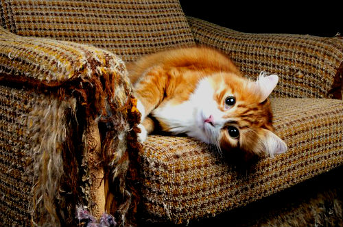

Как отучить кошку кусаться?
Как отучить кошку драть обои, диван или коврик в коридоре? Многие владельцы котов ищут ответ на этот вопрос. К сожалению, ремонт и мебель довольно часто страдают от кошачьих привычек и стараний. Как же сохранить в целости и сохранности и дом, и кошку?
Почему кошка дерет обои?
Конечно, у кошки нет желания освободить вашу стену от обоев, а диван от обивки – действия животных всегда продиктованы их видовыми особенностями.
Все кошки точат когти – это их естественная потребность. Точить когти нужно, чтобы снять старые, отмершие пластинки, а также, чтобы пометить территорию. Засечки на деревьях в естественных условиях важный способ коммуникации, говорящий о размерах животного, и о его претензиях на данную территорию.
Таким образом, кошку нельзя заставить отказаться от этой привычки полностью, но можно уговорить ее точить когти в специально предназначенном для этого месте.
Как отучить кошку драть обои?
1) Кошка не будет драть то, что ей неинтересно
Поэтому не играйте с кошкой около мягкой мебели, не направляйте на обои лазерную указку, и у она не будет знать, что эти поверхности подходят для заточки когтей.
Если вы только планируете ремонт, то ознакомьтесь с нашими рекомендациями по подбору материалов. Эти рекомендации помогут выбрать максимально непривлекательные для кошки обои и обивку.
Если ремонт уже сделан, помните, что всегда можно изолировать кошку, перекрыв ей доступ к отдельным комнатам.
2) Разместите когтеточку там, где кошка любит точить когти
Можно прибить когтеточку к стене с обоями или даже к мебели, там, где ваша питомица уже пробовала драть. Правильно подберите когтеточку и правильно приучите к ней кошку, подробнее об этом читайте в других наших.
3) Обрабатывайте когти кошки
Стригите их раз в 2 недели и подпиливайте пилкой. Также можно использовать колпачки-антицарапки.
Удаление когтей – крайний вариант! Эта процедура превращает кошку в инвалида, а потому запрещена во многих странах мира!
Как видите, отучить кошку драть довольно легко – достаточно сформировать правильное поведение животного.